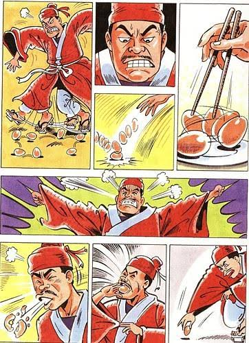

📋 課前說明：自學一 六朝名士畫廊----世說新語選
🎯 本單元核心學習目標：
學習目標 1：
認識《世說新語》的成書背景、內容特色與文學價值。
學習目標 2：
理解〈坦腹東床〉、〈王藍田食雞子〉的故事內容、情節起承轉合與生動的人物特色。
學習目標 3：
能理解魏晉名士的性格解釋，並填入對應人名的事蹟簡述中，完成形象掃描練習。
學習區
世說新語（課本.P166）
原名：《世說》
主編：南朝 劉宋皇族 [ 點擊揭曉 ]劉義慶 ，他召集眾多文士合力編撰而成。
🕒 書中舞台時間：
東漢末年到東晉末年，也就是魏晉南北朝的魏晉時期。
📖 內容核心：
以 [ 點擊揭曉 ]真人真事 為基礎的 [ 點擊揭曉 ]軼聞瑣事 。
💡 軼聞瑣事：像是大家在茶餘飯後「聽說某某人做了這件蠢事、說了這句話」，然後由文士記錄下來的趣味軼事。
🏛️ 文學定位：
是小說，不是正式的史書。雖然以真人真事為基礎，但融合了民間傳說、社會耳語與文學藝術加工，不能全部視為百分之百嚴謹的歷史紀實。
💎 文學價值：
- 呈現人物多元面貌的 [ 點擊揭曉 ]志人小說。
- 篇幅不長、言簡意賅的 [ 點擊揭曉 ]筆記小說。
- 特色：此書善用對比、譬喻、誇飾等技巧，寥寥幾筆就讓名士形象躍然紙上。
- [ 點擊揭曉 ]具研究價值：因人物和事件都是真人真事，所以可供後代學者研究魏晉時期的名人生活、社會風氣和風流韻事。
評量區
世說新語 文意選擇測驗 (共3題)
點擊題號朗讀題幹，點選項即時反饋
1. 《世說新語》原名《世說》，是由南朝宋時期的哪一位皇族文人召集文士合力編撰而成的？
【正確答案：B】
解析：《世說新語》由南朝宋臨川王劉義慶召集門下文士共同編撰而成。
解析：《世說新語》由南朝宋臨川王劉義慶召集門下文士共同編撰而成。
2. 關於《世說新語》的內容與文學特色，下列敘述何者最正確？
【正確答案：C】
解析：《世說新語》記錄魏晉名士的軼聞瑣事，篇幅短小精鍊，融合藝術加工，是著名的志人筆記小說。
解析：《世說新語》記錄魏晉名士的軼聞瑣事，篇幅短小精鍊，融合藝術加工，是著名的志人筆記小說。
3. 有關《世說新語》一書的說明，下列敘述何者錯誤？
【正確答案：B】
解析：《世說新語》不是依時代分類，也不是歷史小說，而是按人物言行德行分類（共三十六篇）的「志人筆記小說」。
解析：《世說新語》不是依時代分類，也不是歷史小說，而是按人物言行德行分類（共三十六篇）的「志人筆記小說」。
學習區
坦腹東床(東床快婿)(課本.P168-169)
🎬 1. 課文導讀影片：
🖼️ 2. 課文漫畫：看圖說故事
▲ 點擊圖片可放大檢視，請同學觀察王羲之與其他王家子弟的舉動差異
📜 3. 原文與翻譯對照：
| 原文 (課本P.169) | 翻譯 (課本P.168) |
|---|---|
|
郗太尉在京口，遣門生與王丞相書，求女婿。 丞相語郗信：「君往東廂，任意選之。」 |
郗太尉在京口時，派遣門生送信給丞相王導，信中說想在王家的子姪中挑一個女婿。 丞相對使者說：「請你到東廂中任意挑選吧！」 |
| 門生歸，白郗曰：「王家諸郎，亦皆可嘉，聞來覓婿，咸自矜持；唯有一郎，在東床上坦腹臥，如不聞。」 | 門生回去後，向郗太尉報告：「王家的子弟都很不錯，聽說來挑女婿，個個都很莊重。只有一位躺在東邊的床上露出肚皮，似乎不當一回事。」 |
|
郗公云：「正此好！」 訪之，乃是逸少。因嫁女與焉。 （世說新語雅量篇） |
太尉說：「嗯！就是這一個最好！」 打聽之後，原來是大書法家王羲之，就將女兒嫁給他。 後人便以「坦腹東床」或「東床快婿」指稱女婿。 （此則故事出自雅量篇） |
📊 4. 從「袒腹東床」看起承轉合：
人物列表：太尉郗鑒（郗太尉）、王氏家族子弟（王導等王家年輕人）、王羲之
| 結構階段 | 情節內容 (紅字為填答處) |
|---|---|
| 起：事件的開始 | [ 點擊揭曉 ]郗鑒派人到王家選婿 。 |
| 承：故事發展 | [ 點擊揭曉 ]王家子弟爭相表現 （個個端莊拘謹、咸自矜持）。 |
| 轉：意想不到的轉折 |
1. [ 點擊揭曉 ]唯獨一人淡定、袒腹東床。 2. 信使回報時「特別」形容了這個不拘小節的怪人。 |
| 合：最後的結局 |
[ 點擊揭曉 ]郗鑒大喜，當場決定把女兒嫁給他。 💡 成語：袒腹東床 = 東床快婿（指稱女婿） |
🔍 5. 坦腹東床之重點解析（點擊題目展開解析）：
評量區
坦腹東床 文意選擇測驗 (共3題)
點擊題號朗讀題幹，點選項即時反饋
1. 郗太尉聽了門生對王家諸郎的觀察後，從他的回答和選擇，可看出他欣賞王羲之的何種特質？
【正確答案：C】
解析：王家子弟個個拘謹做作（咸自矜持），只有王羲之坦然躺臥、神情自若，郗太尉欣賞的是其「本性率真、自然豁達」的名士風度。
解析：王家子弟個個拘謹做作（咸自矜持），只有王羲之坦然躺臥、神情自若，郗太尉欣賞的是其「本性率真、自然豁達」的名士風度。
2. 後人常以「坦腹東床」或「東床快婿」來借指下列何者？
【正確答案：B】
解析：「東床快婿」源自郗太尉在東廂選王羲之為婿的典故，後代用來稱讚令岳父滿意的好女婿。
解析：「東床快婿」源自郗太尉在東廂選王羲之為婿的典故，後代用來稱讚令岳父滿意的好女婿。
3. 關於魏晉名士服食「五石散」的敘述，下列何者最正確？
【正確答案：B】
解析：五石散由重金屬礦物研磨而成，服後全身發燙燥熱，名士因此穿寬大袍子並快步行走發散藥力（行散），實為有害不良流行。
解析：五石散由重金屬礦物研磨而成，服後全身發燙燥熱，名士因此穿寬大袍子並快步行走發散藥力（行散），實為有害不良流行。
學習區
王藍田食雞子)(課本.P170-171)
🖼️ 1. 課文漫畫：看圖說故事

▲ 點擊圖片可放大檢視，請同學觀察王藍田吃雞蛋時氣急敗壞的一連串動作
📜 2. 原文與翻譯對照：
| 原文 (課本P.170) | 翻譯 (課本P.171) |
|---|---|
| 王藍田性急，嘗食雞子，以筯刺之，不得，便大怒，舉以擲地。 | 王藍田性情急躁，有一次吃雞蛋時，用筷子去刺，沒有刺到，就非常生氣，便拿起蛋來扔在地上。 |
| 雞子於地圓轉未止，仍下地以屐齒蹍之，又不得，瞋甚。 | 雞蛋在地上轉個不停，他就從坐榻上下來用木屐去踩，沒有踩到，因此更加憤怒。 |
| 復於地取內口中，齧破即吐之。 | 又從地上把蛋撿起來放入口中，用力咬破後立刻吐出。 |
|
王右軍聞而大笑，曰：「使安期有此性，猶當無一豪可論，況藍田耶？」 （世說新語忿狷篇） |
王羲之聽到此事大笑說：「即使他父親安期有這種個性，我都認為一無可取了，何況是藍田呢！」 （此則故事出自忿狷篇） |
📊 3. 從「王藍田食雞子」看人物特色：
| 探討項目 | 內容特徵 (紅字為填答處) |
|---|---|
| 名字 | 王藍田（本名王述，封藍田侯） |
| 性格 | [ 點擊揭曉 ]性急暴躁、情緒失控、行事偏激 |
| 做了什麼動作 (連續動詞)(課本P170) |
[ 點擊揭曉 ]食、刺、擲、蹍（踩）、內（納、放）、齧、吐 |
| 安期是誰？ |
[ 點擊揭曉 ]王藍田的爸爸(王導) 💡 備課補充：王藍田之父王承，字安期，為東海太守，以穩重著稱。教材備課書特別註明為「王藍田的爸爸(王導)」，指其同族長輩之意。 |
🖼️ 4. 想想看：填入王藍田動作的圖 (課本 P171 想想看 3)
王藍田食雞子時，曾做了：甲「以筯刺之，不得」、乙「舉以擲地」、丙「以屐齒蹍之」、丁「齧破即吐之」等動作，如圖所示，請觀察下圖各步驟，將相對應動作的代號填入括號中：

🔍 點擊圖片可放大觀看細節
步驟 1. 嘴裡咬碎吐出：
[ 點擊揭曉 ]代號：丁「齧破即吐之」
步驟 2. 筷子夾戳不中：
[ 點擊揭曉 ]代號：甲「以筯刺之，不得」
步驟 3. 木屐鞋底猛踩：
[ 點擊揭曉 ]代號：丙「以屐齒蹍之」
步驟 4. 憤怒摔在地上：
[ 點擊揭曉 ]代號：乙「舉以擲地」
評量區
王藍田食雞子 文意選擇測驗 (共3題)
點擊題號朗讀題幹，點選項即時反饋
1. 王羲之聽到王藍田食雞子的事笑說：「使安期有此性，猶當無一豪可論，況藍田耶？」王羲之這段話透露出什麼訊息？
【正確答案：D】
解析：王安期素有清譽且為人穩重，王羲之認為連德高望重的安期若有急躁脾氣都無足稱道，何況藍田，言下之意反映出王安期平日為人穩重。
解析：王安期素有清譽且為人穩重，王羲之認為連德高望重的安期若有急躁脾氣都無足稱道，何況藍田，言下之意反映出王安期平日為人穩重。
2. 「王藍田性急，嘗食雞子，以筯刺之，不得，便大怒，舉以擲地。雞子於地圓轉未止，仍下地以屐齒蹍之，又不得，瞋甚。復於地取內口中，齧破即吐之。」依據此段文字，下列敘述何者正確？
【正確答案：B】
解析：王藍田用筷子戳不中雞蛋便勃然大怒將蛋摔在地上，表現出「因憤怒而擲蛋」的急躁性格。
解析：王藍田用筷子戳不中雞蛋便勃然大怒將蛋摔在地上，表現出「因憤怒而擲蛋」的急躁性格。
3. 作者在描寫王藍田吃蛋的過程中，連續使用了「食、刺、擲、蹍、內、齧、吐」等動詞，其寫作手法的最大效果為何？
【正確答案：B】
解析：作者運用密集的連續動詞，將王藍田暴躁易怒、氣急敗壞的連鎖失控反應描寫得生動傳神。
解析：作者運用密集的連續動詞，將王藍田暴躁易怒、氣急敗壞的連鎖失控反應描寫得生動傳神。
學習區
人物形象掃描(課本.P174)
📝 填答說明：
從《世說》的故事中，我們可以看到魏晉名士處世的風貌。請根據下列人物的事蹟簡述，選出最適合的性格填入空格內。
💡 性格詞庫與互動解釋（點擊卡片查看定義與名士典範）：
💡 點擊任一張性格卡片可展開/收合深度解析與事蹟對照，點擊 🔊 可個別聆聽報讀：
【聰慧機靈】
釋義：聰明、機智的人。
📖 課本典範：孔融隨父訪李膺，妙答陳韙「小時了了」，展現敏捷機智。
📖 課本典範：孔融隨父訪李膺，妙答陳韙「小時了了」，展現敏捷機智。
【吝嗇小氣】
釋義：一毛不拔、氣量狹小、過度節省。
📖 課本典範：王戎身為富豪，賣李子前卻先把果核鑽洞，極端小氣。
📖 課本典範：王戎身為富豪，賣李子前卻先把果核鑽洞，極端小氣。
【不隨聲附和】
釋義：拒絕盲從他人的言論，堅持獨立主見。
📖 課本典範：眾人奉承權貴王導之言，王藍田卻能獨立思考而不阿諛。
📖 課本典範：眾人奉承權貴王導之言，王藍田卻能獨立思考而不阿諛。
【眼光獨特】
釋義：擁有與眾不同的審美眼光、見解或洞察力。
📖 課本典範：郗太尉不受王家諸郎做作拘謹迷惑，一眼相中王羲之之真率。
📖 課本典範：郗太尉不受王家諸郎做作拘謹迷惑，一眼相中王羲之之真率。
【不隨俗流】
釋義：不跟隨世俗潮流、不盲目融入大眾群體價值觀。
📖 課本典範：世俗七夕曬名貴書籍衣物，郝隆坦腹曬肚皮誇腹中有真學問。
📖 課本典範：世俗七夕曬名貴書籍衣物，郝隆坦腹曬肚皮誇腹中有真學問。
👥 請根據下列人物事蹟簡述，選出最適合的性格填入空格內：
| 人名 | 事蹟簡述 | 形象特色 (選擇填答) |
|---|---|---|
|
郝隆 |
炎熱的七月七日，富裕人家在這天將所有的書搬出來晒，郝隆卻坦腹躺在太陽下。(參見P168) | |
|
郗太尉 |
郗太尉挑女婿，聽到王導的子弟個個都很莊重，只有王羲之露出肚皮躺在床上，便選王羲之為女婿。(參見P168) | |
|
孔融 |
孔融隨父親拜訪聲望極高的李膺，在場賓客陳韙批評孔融「小時了了，大未必佳」，孔融的回應讓他說不出話來。(參見P172) | |
|
王戎 |
王戎家境富有，但賣李子時怕別人得到這些種子，總先把李核鑽個洞。(參見P170) | |
|
王藍田 |
王導位高權重，每說一句話，大家都爭相讚許，王藍田卻不認為王導所說的每句話都是對的。(參見P170) |